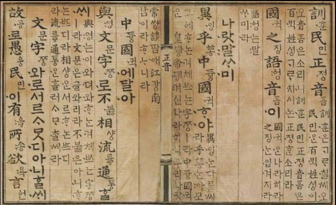

 한글은 인류가 사용하는 문자들 중에서 창제자와 창제년도가 명확히 밝혀진 몇 안 되는 문자이다. 한글은 그 창제 정신이 '자주, 애민, 실용'에 있다는 점에서도 세계에서 가장 뛰어난 문자로 평가받는다. 이러한 창제 정신과 더불어 제자(制字) 원리의 독창성과 과학성에 있어서도 뛰어나다. 이러한 한글의 특성은 국제 기구에서 공인을 받기에 이르렀다. 유네스코(UNESCO)에서는 해마다 세계에서 문맹 퇴치에 공이 큰 사람들에게 '세종대왕 문맹 퇴치상'(King Sejong Literacy Prize)을 주고 있다. 이 상의 명칭이 세종대왕에서 비롯된 것은 세종대왕이 만든 한글이 가장 배우기가 쉬워 문맹자를 없애기에 좋은 글자임을 세계가 인정했기 때문이다. [네이버 지식백과] 한글의 우수성 (Basic 고교생을 위한 국어 용어사전, 2006. 11. 5., 구인환)